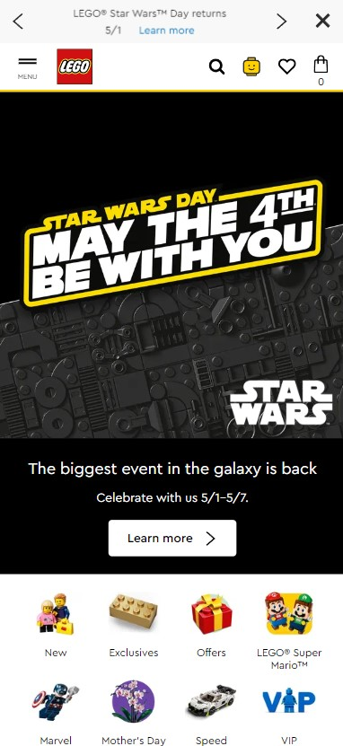
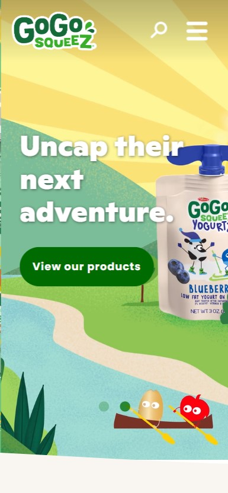
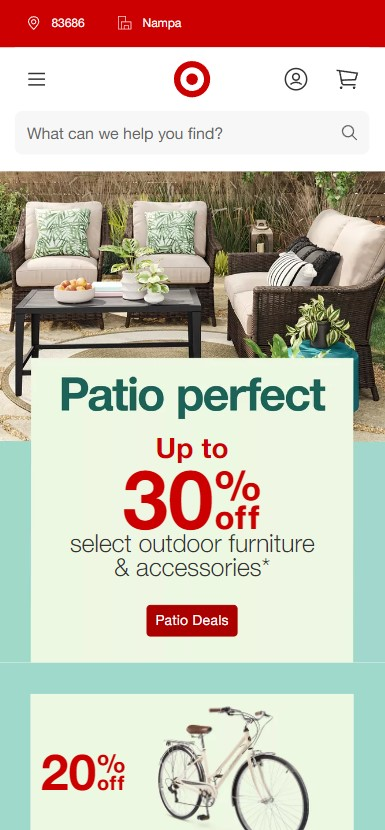

Visual hierarchy
Lego shop
lego.com I like the lego website because it has a great example of visual hierarchy. as you can see how the images are stagger and as closer it gets to the header the images become bigger.
Rule of Thirds
googosqueez website
gogosqueez.com The gogosqueez website shows well the rule of thirds as you can see on the right side we have the menu. on the left a logo, center is information and a botton. and on the bottom a graphic of the product that atracts the eye.
White Space and Clean Design
Target online store
Target.com The target website show how well manage the white spaces. there is the two boxes in the middle but well center and enough information needed and on top you can see a search bar with a navigation bar for the user.